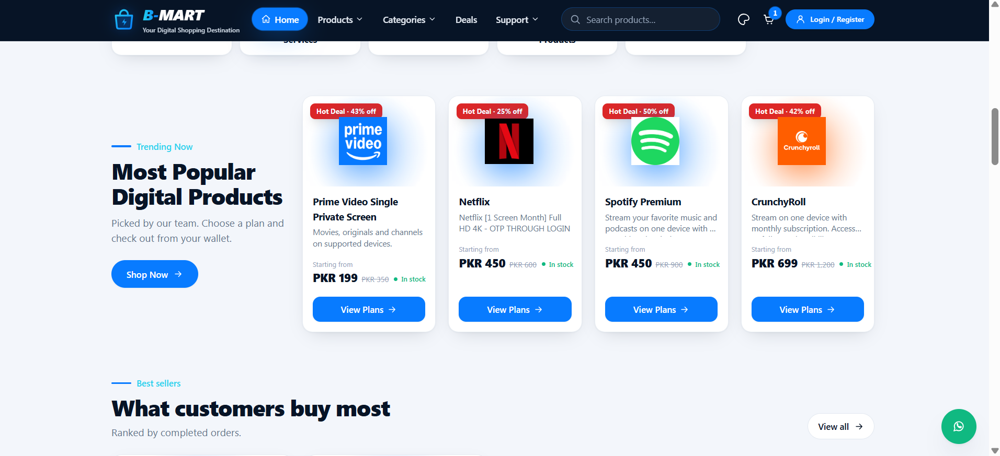
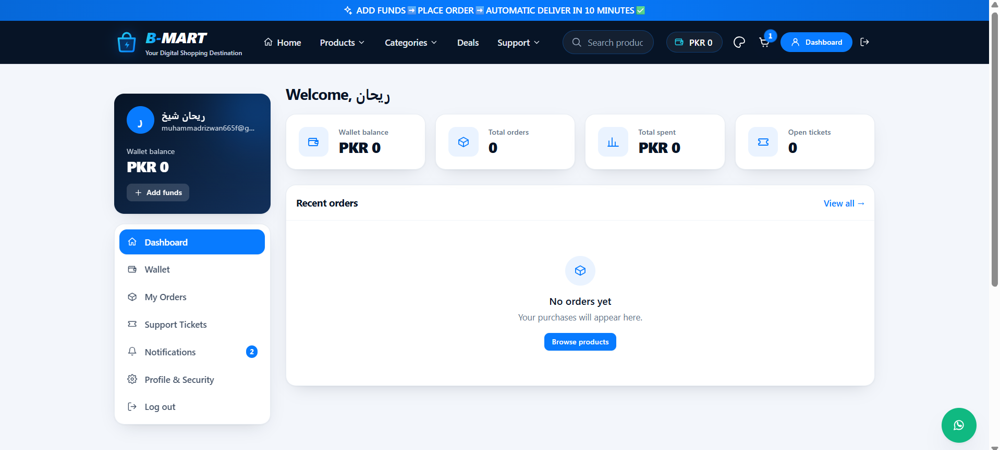
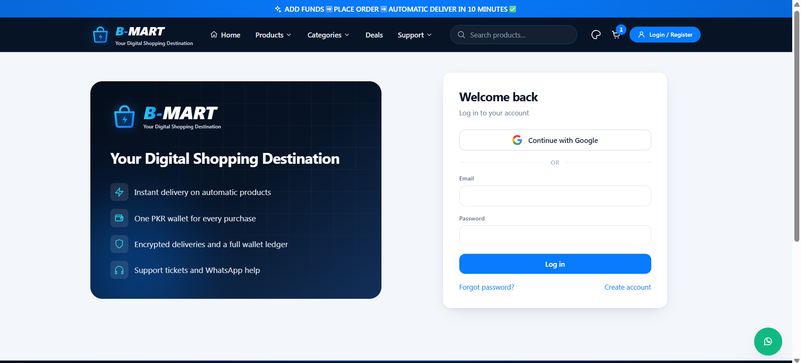
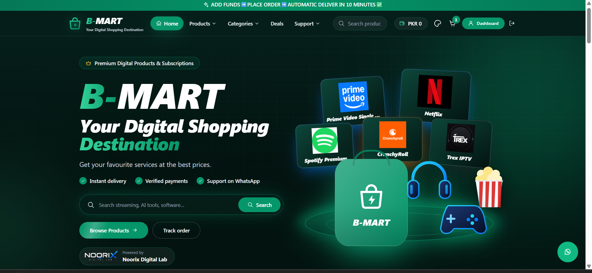
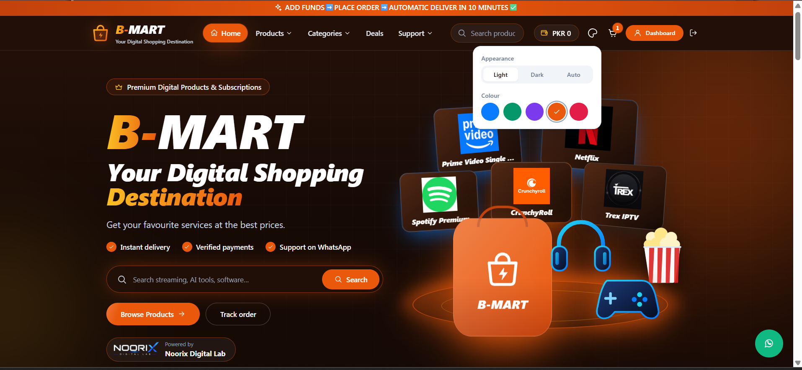

Website & eCommerce Development
Professional websites and online stores that build trust, communicate your offer and convert visitors.
Corporate websites · eCommerce · Shopify · WordPress · Custom web appsFrom professional websites to custom business software and intelligent AI systems, we turn complex requirements into useful digital products.
We combine design, engineering and automation to create digital solutions that solve practical challenges and help businesses grow.
Professional websites and online stores that build trust, communicate your offer and convert visitors.
Corporate websites · eCommerce · Shopify · WordPress · Custom web appsPurpose-built platforms to organize operations, customers, inventory, teams and business data.
CRM & ERP · POS · Inventory · Booking systems · Admin panelsAI assistants that respond to enquiries, qualify leads and support customers across digital channels.
WhatsApp AI · Website chat · Lead qualification · Support botsVoice agents for inbound enquiries, follow-ups, appointment handling and receptionist workflows.
AI receptionist · Inbound calls · Outbound calls · AppointmentsIntuitive mobile applications connecting customers and teams with your products and services.
Android · iOS · Cross-platform · API integrationConnect your tools, reduce repetitive work and create smoother everyday business processes.
Workflow automation · Lead flows · Notifications · IntegrationsClear interfaces and consistent product experiences for websites, applications and dashboards.
UI/UX · Wireframes · Prototypes · Design systemsMaintainable technical foundations that connect applications, data and third-party services.
Backend · Databases · APIs · Cloud deployment · MaintenanceA featured digital product with real interface screenshots and a live website link. More case studies will be added as they are ready to share.
A digital storefront featuring product browsing, customer account access and responsive interface views.
 OPEN LIVE PROJECT ↗
OPEN LIVE PROJECT ↗





Noorix Digital Lab is an SECP-registered technology company based in Lahore, Pakistan.
We work with founders, growing businesses and established teams to plan and build digital products that make work simpler, services more accessible and ideas more useful.
We select technologies according to project requirements, with a focus on usability, performance and long-term maintainability.
A structured process keeps everyone aligned, from the first conversation to the finished product.
Understand your goals, audience, challenges and requirements.
Define the scope, priorities, structure and user experience.
Build, review and refine the solution with your feedback.
Prepare the release and provide agreed post-launch support.
Tell us what you want to build, improve or automate. Let’s discuss your requirements and the next practical step.